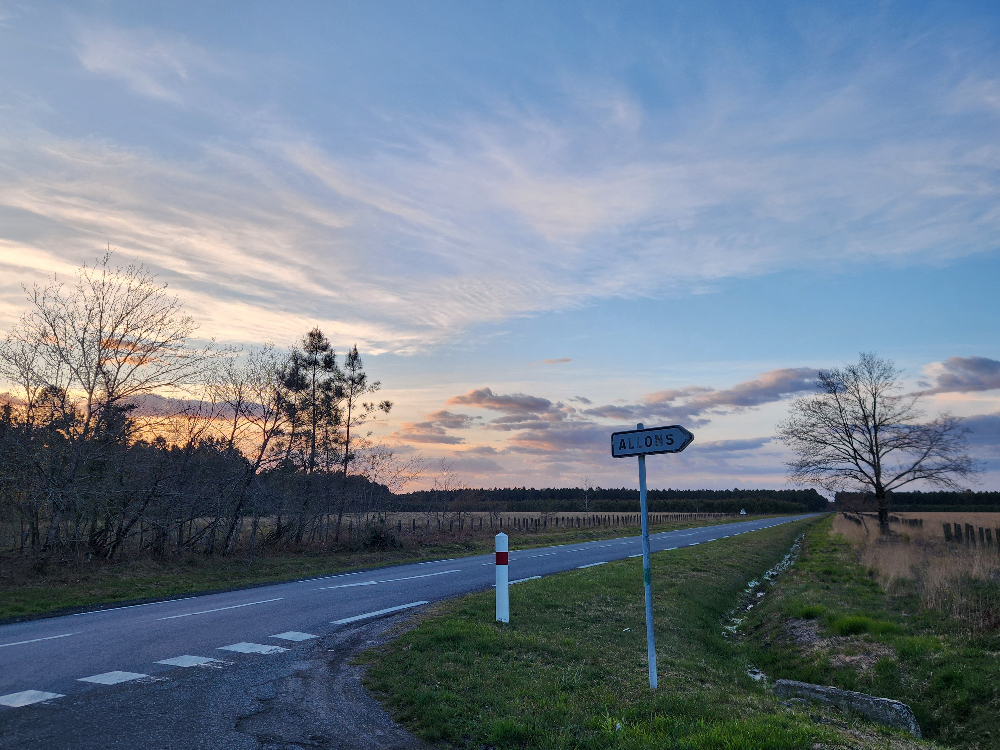

Et après l’IUT ?
Transition, cheminement, continuité.
À l’origine, le titre de ce portfolio était transition, et ce n’est pas un hasard. Si je me suis tourné vers l’animation, c’est parce que je savais être à l’aise dans l’accompagnement individuel, mais beaucoup moins dans la dynamique de groupe. Or, comme je voulais centrer ma vie professionnelle sur l’accompagnement et la transmission, l’animation représentait pour moi une opportunité d’apprendre, de grandir et de sortir de ma zone de confort.
Finalement, l’un des plus grands apprentissages que j’en retire est que l’être humain s’adapte et évolue, mais qu’il n’est pas malléable à l’infini. J’en ai réellement pris conscience vers la fin de mon BPJEPS. J’ai néanmoins choisi de poursuivre en faisant une passerelle vers l’IUT, pour découvrir l’animation sous un autre angle, notamment à travers le prisme de la culture.
Les connaissances et les acquis que j’ai appris m’accompagneront toute ma vie, je prends l’exemple du pouvoir d’agir qui est la base de tout accompagnement à mes yeux. Un psychologue ne dira jamais directement à quelqu’un ses problèmes, son rôle est de les amener à les comprendre d'eux-mêmes. Le psychologue plante les graines, et c’est au patient de les arroser s’il le souhaite. Cette notion me vient du pouvoir d’agir, du fait de stimuler la personne afin qu’elle puisse prendre conscience de sa force intérieure, de ses capacités.
J’ai candidaté à une passerelle en L3 de psychologie pour l’année 2026/2027. Je pensais initialement me construire au fil de mes expériences jusqu’à me sentir prêt à me lancer en tant que thérapeute indépendant, mais aujourd’hui, je ressens le besoin d’un cadre académique solide. Cette passerelle répond à mon besoin de connaissance, de professionnalisation et de légitimation, à la fois personnelle et institutionnelle.
Aujourd’hui, après ce chemin fait d’expériences, de doutes et de confirmations, je me tiens avec lucidité et conviction devant la voie qui m’appelle : celle d’une pratique centrée sur la personne et son développement psychique pleinement assumé, où je pourrai mettre ma sensibilité, mon sens de l’écoute, mon empathie et mon désir de transmission au service des autres.
